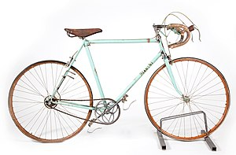

The term road bicycle is used to describe bicycles built for traveling at speed on paved roads.
Some sources use the term to mean racing bicycle. Other sources specifically exclude racing bicycles
from the definition, using the term to mean a bicycle of a similar style but built more for endurance
and less the fast bursts of speed desired in a racing bicycle; as such, they usually have more
gear combinations and fewer hi-tech racing features.